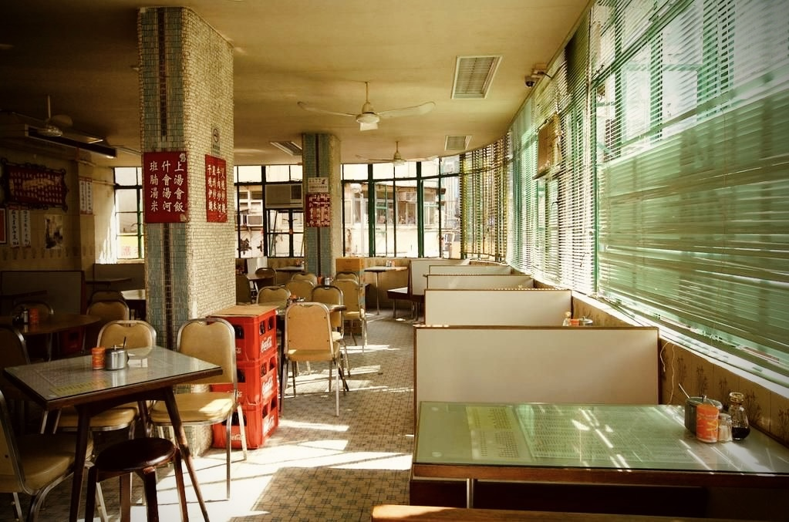
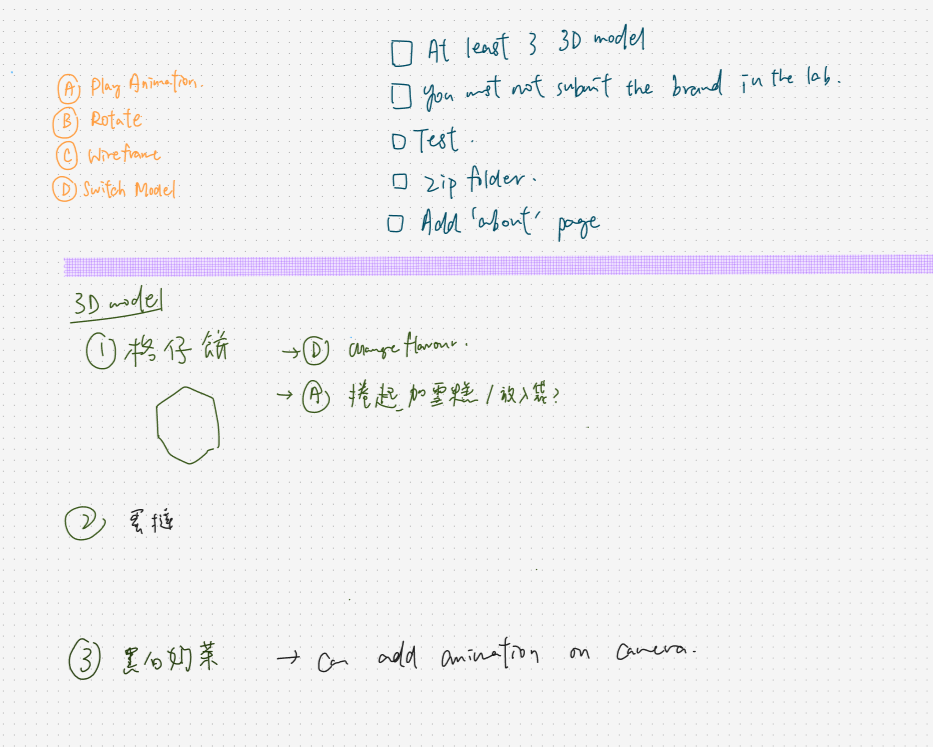
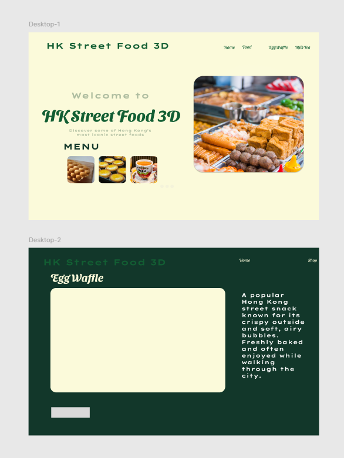
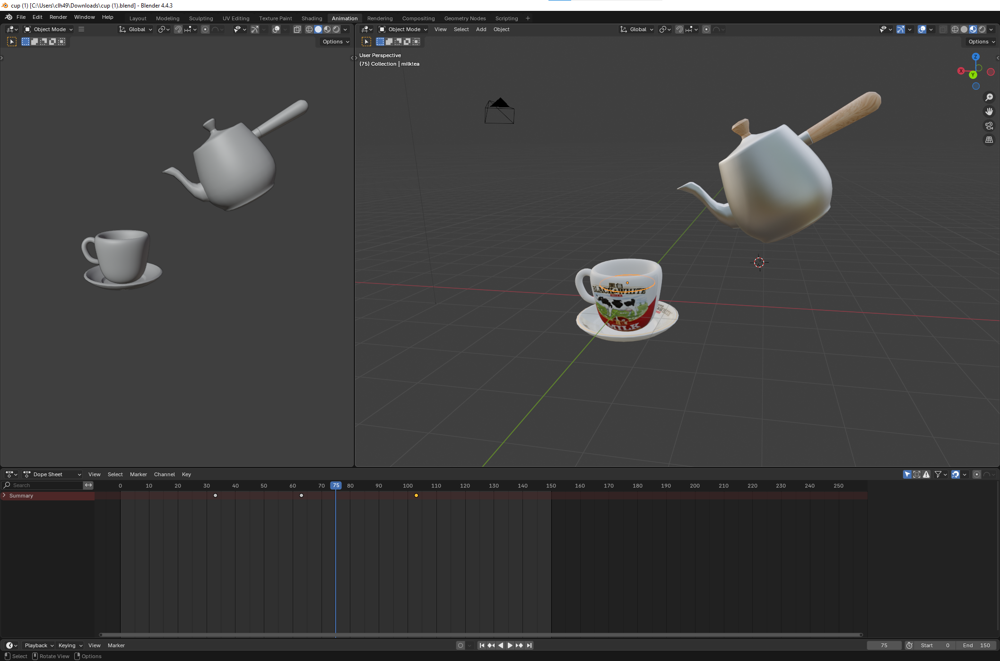
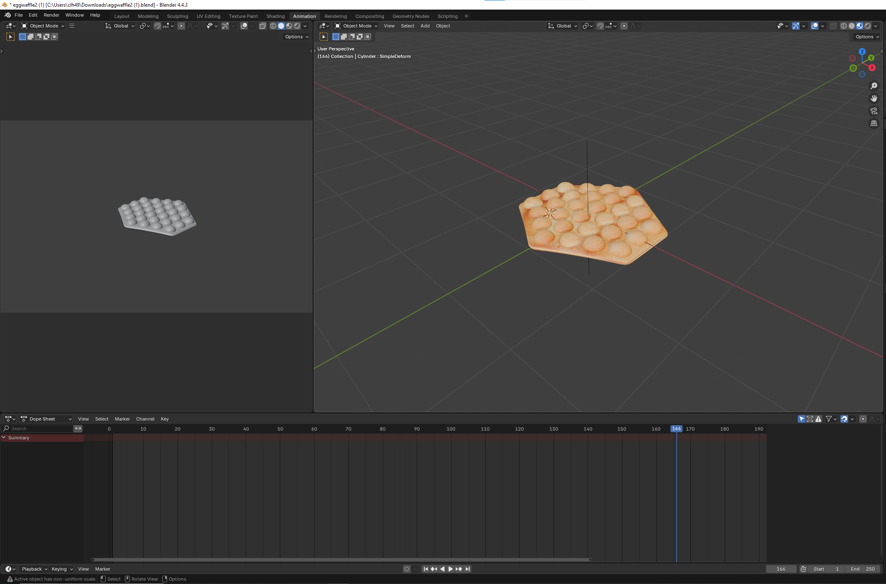
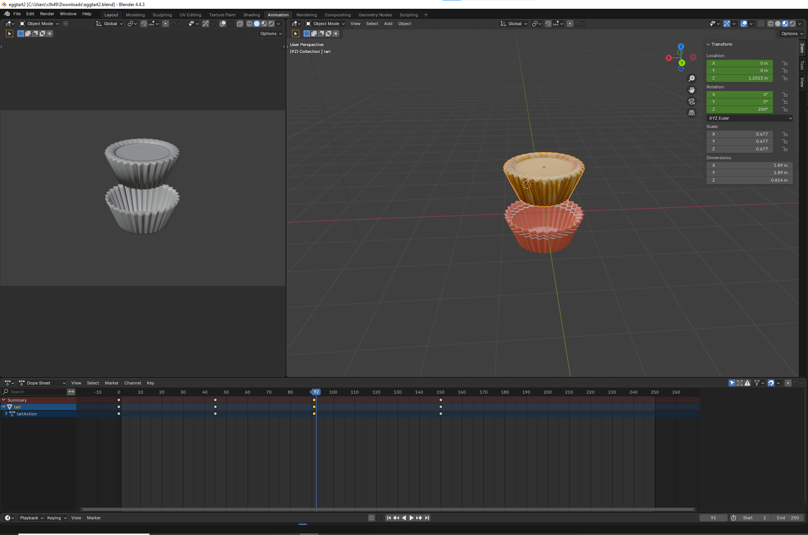
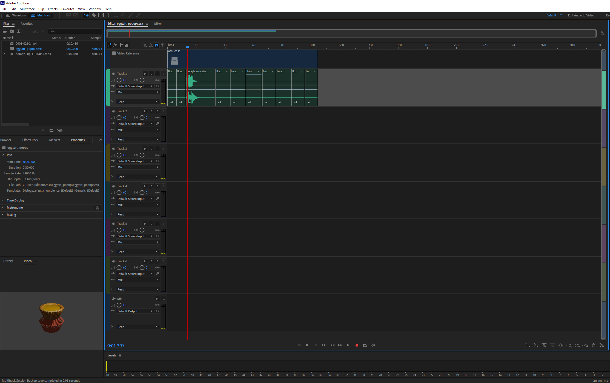

HK Bites 3D
About This Project

HK Bites 3D is an interactive Web 3D experience that showcases iconic Hong Kong street food using real-time 3D models. Users can explore egg waffle, egg tart, and Hong Kong-style milk tea through animations, camera controls and rendering options such as wireframe and animation mode.
The project combines cultural storytelling with modern web technology to create an engaging digital food experience that is easy to explore on both desktop and mobile.
Design Concept
The visual direction is inspired by the warmth and vibrancy of Hong Kong street food culture. A clean, minimal interface keeps the focus on the 3D models, while consistent colors and straightforward navigation help users move through the site confidently.
Basic planning and interface structure were first drafted in Figma to map layout, navigation flow, and interaction priorities before implementation.


Each model page includes concise food descriptions so visitors can learn cultural context without feeling overwhelmed.
3D Modelling Process
The 3D assets were created in Blender with optimized geometry and realistic material work suitable for web rendering. Textures were applied to improve detail while keeping performance practical for browser delivery.
A full fluid simulation was originally tested for milk tea pouring, but this was not ideal for export and playback in Three.js. A simplified animation method was used instead by adjusting liquid mesh position and shape to simulate pouring and movement.
This approach maintains visual quality while improving performance, and is supported by subtle secondary animations to increase realism.



Render Video
Short render previews are included below to show animation timing and look development for each food model.
Technologies Used
- HTML5 and CSS3 for structure and styling
- JavaScript for interaction logic
- Three.js for real-time 3D rendering in the browser
- Blender for modelling and animation
- Adobe Audition for audio editing and cleanup
Lighting was refined through experimentation with GUI controls. Ambient, hemisphere, directional, and under-lighting combinations were tested to achieve a balanced scene.
Audio Implementation
Edited sound effects are triggered by user interaction to reinforce actions and improve immersion. Audio sources were obtained from Pixabay and synchronized with animations after processing in Adobe Audition.

Accessibility Considerations
Accessibility was included throughout design and development: readable text sizing, clear contrast, consistent button styles, and simple navigation patterns all help reduce cognitive load.
The interface is intentionally uncluttered so users can focus on interacting with the 3D content.